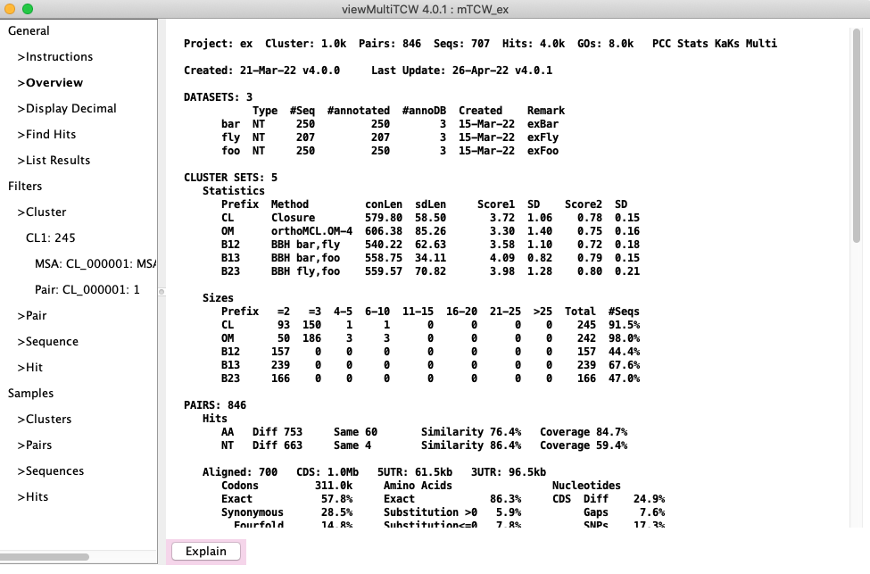
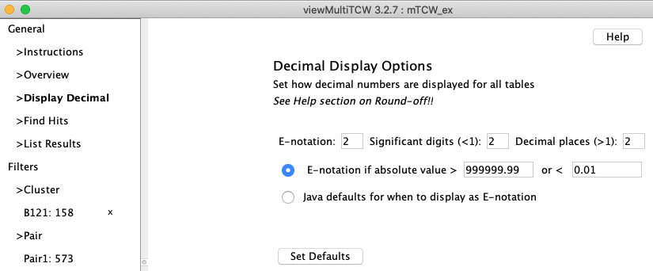
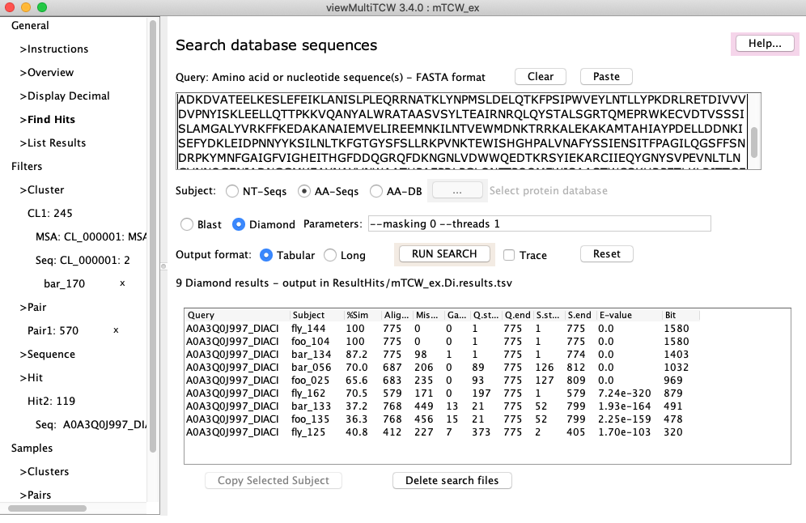
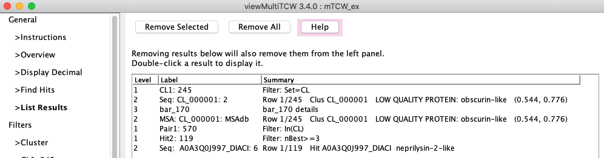
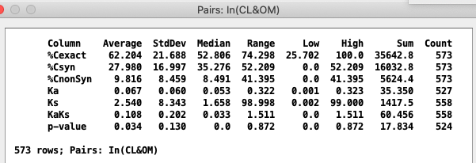

|
viewMultiTCW - View and Query Multiple Species
Start
viewMultiTCW displays information from a multiTCW (mTCW) database, which was created
by one or more singleTCW (sTCW) databases with runMultiTCW.
|
General
➤Overview: The top part of the Overview is shown on the right and can be scrolled
to view the entire page.
Explain describes how the statistics were computed
and Overview shows the HTML of the overview on the right.
| 
|
➤Decimal Display allows the formatting of decimal numbers to be changed (View).
➤Find Hits allows a sequence to be searched against the
mTCWdb sequences or a selected database (View).
➤List Results provides a table of all results along with the query
(View).
Filters
Provides filters for the four types of tables: clusters, pairs, sequences and hits.
The Table Features shows some general features.
Samples
The tables can be very big, so the bottom four tabs provide Sample tables
of just a few 1000 entries.



All four tables (Clusters, Pairs, Sequences, Hits) have the following options at the top of their panel:
| The Table... drop-down allows exporting the table, the sequence of the table, etc.
The Show Column Stats option to display summary
statistics for the rows and numeric columns of the displayed table, as illustrated on the right for the Pairs table.
| 
|
All four tables have the following at the bottom of their table:
- The Select Column panel displays all possible columns.
- Mousing over a column name describes it in the lower left corner.
- Selecting or deselecting a column name immediately shows or removes the column from the table.
- The columns can be sorted and moved around.
| 

{kind=link}
{kind=link}
{kind=link}
{kind=link}
{kind=link}
{kind=link}